Bridge
A1 From Method Grid to Learning Action
In linear teaching thinking, the teacher comes first. The teacher picks a method and frames a task. Then, at the end, the student carries it out. But what happens in an AI-supported learning system where learning is cyclical, networked, and co-adaptive? Won't methods and tasks end up permanently entangled? Will these two levels still be needed as didactic categories in 2040?
For a moment I step back and ask myself: Who are you going to put this question to? The answer is interesting, because I would never ask a person this. Not an educational researcher, not a general or subject-area pedagogy specialist, not a lecturer at a teacher-training college. Not because I don't value them — but because I'm not looking for the academic answer right now. I want to shift my perspective, think differently, and look at established models from another angle and question them. And — I'll ask GPT, because it won't give me a strange look.
You: Does it still make sense to keep levels 2 and 3 separate in 2040? I'm wondering whether we should merge levels 2 (methods) and 3 (task formats) and reorganize them into: (teaching methods) — everything that happens in the classroom through the teacher — and task formats, where the teacher isn't directly needed.
GPT proposes a model it calls the «Learning Action Model 2040». It's a structure that describes concrete learning actions regardless of whether they're initiated by a teacher, AI, a peer, or the learner themselves. Learning actions as a didactic category aren't really new, so I take note and move on.
Birth of a Database
B1 The Idea of Building Multiple Databases
It's October 29, 2025, and the weeks before have left me with a pile of methods, task formats, and didactic models. But they're still sitting side by side. What's missing is their shared database logic — the connections between them. So I pick up the idea of learning actions and the suggestion from the system intelligence. This will be a continuation of the treehouse development from September, but at a different level. I start thinking in networked databases. And I throw this thought straight at GPT:
You: Basically, what we're building now is a database whose contents AI can later access.
I start with the «Learning Actions» database because I already have a structure in mind, and I have it filled with five complete sample records.
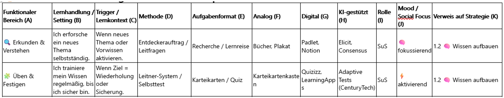
The «Mood / Social Focus» column covers «learning well-being» and the «Trigger/Learning Context» column answers the question: «When is which learning action activated?»
I have GPT generate more records: I check the first five myself, then I add more step by step until I have 28 records covering all metacognitive strategies. Why metacognitive strategies specifically? Because six weeks ago I had the idea of integrating them more "connectedly" into classroom practice. That question — what are the contact points between cognitive strategies and learning actions? — is what led to this database being built. So the first database on learning actions is done. But are there more?
Expanding to a DB List
C1 One Database Becomes Seven
I could theoretically add methods and task formats to the «Learning Actions» database indefinitely. I know I could build more databases, and «feedback processes» and «artifacts» come to mind right away. I want to see what AI suggests for additional databases:
You: If you were a teacher, pedagogy specialist, and educational researcher in 2040, what additional pedagogical-didactic databases would you build?
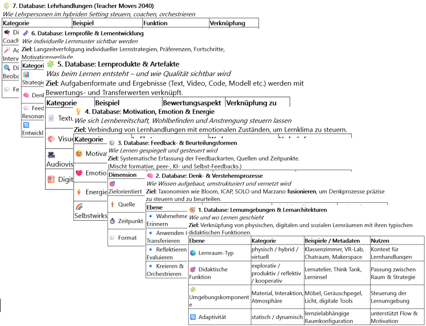
GPT presents an overview of possible databases. I treat the seven databases as proposals. Each one needs a clear subject, its own records, and I'll have to define the relationships to the other tables.
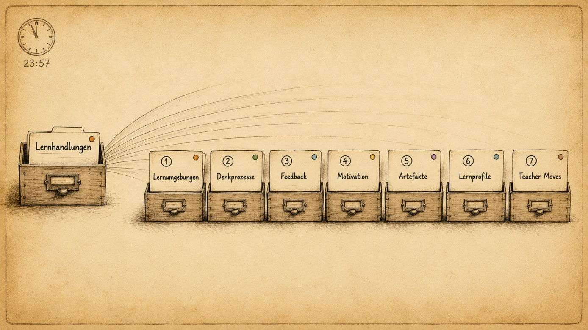
It's late and I start counting the lists: Seven. Not one, not three. Seven databases are sitting in front of me. They're still isolated, side by side, no connections yet — but all of them exist now as empty Excel sheets. I stare at the screen and ask myself: "Can you actually link these tables to the elements from the treehouse?"
Connecting the DB List to the Treehouse into a Didactic Operating System
D1 The Treehouse Is Looking for Its Data
My didactic treehouse model is solid in its form. But I don't want to see the databases as external, isolated data sources sitting next to it — I want them as integrated, connected supporters for my actual work in the classroom. So I ask for a connection between the treehouse elements on one side and the databases on the other:
You: My teaching architecture is built on the metaphor of the treehouse. How do I use the databases for that? Which ones go where? And where can AI support me in doing that?
What AI presents to me is a didactic interplay from a systems perspective: it shows how data from feedback (DB 3) and thinking processes (DB 2) flow into «LEARNING TEST» and «LEARNING STAIRCASE», and how the elements «LEARNING VIEW» and «LEARNING CARD» feed information into the Motivation/Emotion (DB 4) and Learning Profiles (DB 6) databases.
These are questions I have to answer as part of the process of developing an AI-based didactics and a systemically networked way of learning with AI. What do I want? And what do I not want? «How can AI concretely support me and my teaching?»
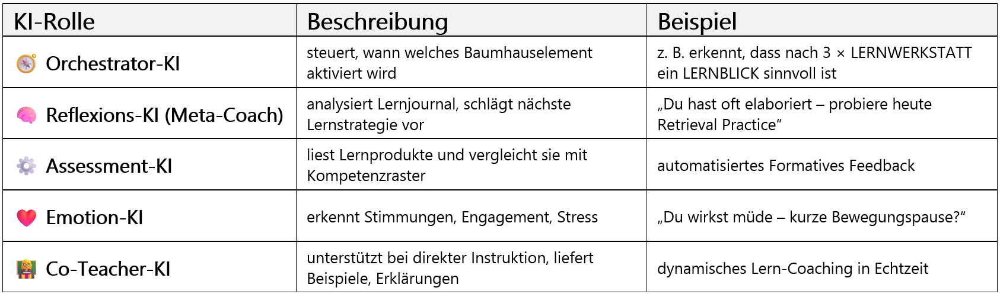
And if I can't answer those questions — or if I have doubts — then I have no business using AI. Not in real life, not in the classroom. In my architecture, AI is not supposed to replace pedagogy; it's supposed to serve as a didactic amplifier. It can support orientation, differentiation, and feedback. But responsibility and competence stay with the human: with pedagogical judgment, with room to act, and with the obligation to say no in time.
D2 An Operating System for Learning
By connecting the databases to the treehouse elements, something like my didactic operating system starts to take shape: a vision and an understanding of learning inside a dynamic, hybrid, self-organizing system. First I put together a rough overview of the databases and their function in the treehouse model — and then I ask GPT to add a look ahead into the future.
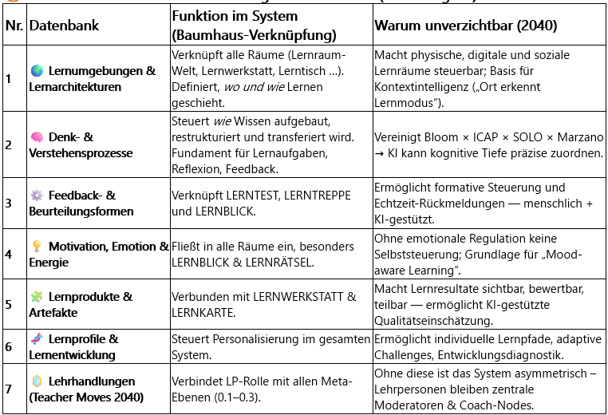
I notice that it picks up cross-cutting dimensions we'd already discussed in other chats and adds them here as a supplementary meta-layer. It doesn't show them as tables yet — I see them as tags it places. I have nothing against these dimensions: «AI/Media Literacy», «Cooperation & Social Dynamics», and «Reflection/Metacognition». And just like that, my Didactic Operating System grows.
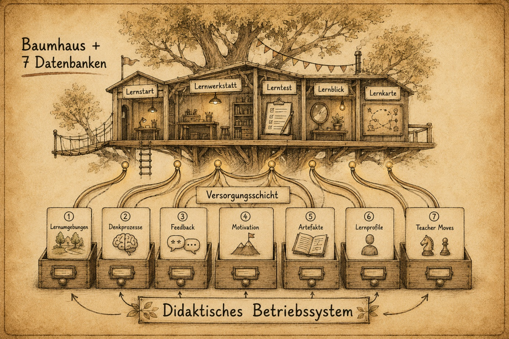
Growing into a Didactic Ecosystem
E1 A New Chat, a Concrete Starting Point
This morning I watched my students work: Lara was chatting, and with Tim I honestly couldn't tell if he'd really understood the task. I thought about it and asked myself: «What if it weren't me as the teacher who triggers an action in class — but instead rules with routing logic and data from databases that suggested a course of action to me?»
Now it's evening and I open a new chat. I upload everything, briefly sketch the context — the databases, my work on connecting them to the treehouse — define the role, and get to work. GPT puts together a selection for me:
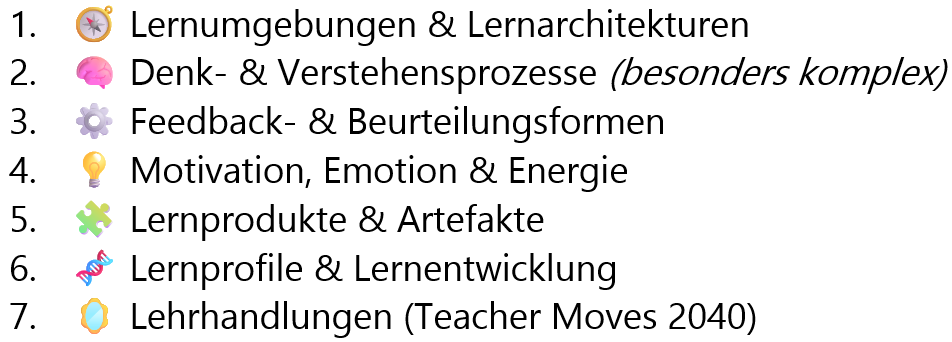
GPT: Where do you want to start?
E2 Connected Thinking: Element x Needs Element y
I know that the treehouse elements need information — and that this information is stored as data in databases and linked together — but I don't know how. So I write a 483-word prompt, straight from the gut: my vision of teaching, the role of entry points, diagnostic tests, learning-goal cards, and task pools. How the learning table and learning view feed into the learning space and workshop. How student products flow into the learning profile … and much more. And at the end I just write:
You: Map out these connections and their dependencies.
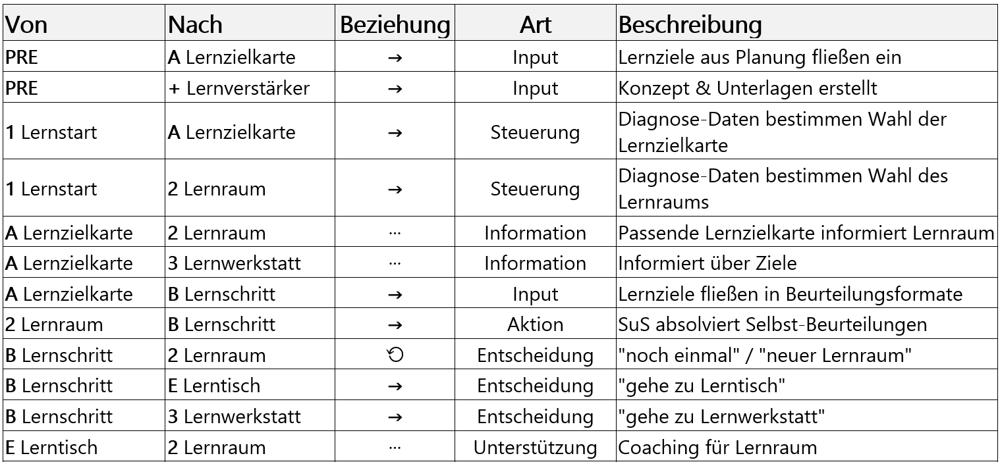
Within minutes, AI generates the dependency table and an instrument matrix — and in the process also produces a materials overview. Could I have done that myself? Sure, but it would have taken me hours. And as a bonus, there's an additional section on critical interfaces and workflow optimization.
My favorite part is a section GPT wrote on its own — about itself — on how it could automate its own workflow. That kind of meta-reflection I find genuinely interesting. And to wrap things up, it produces an "Outlook to 2040." I'm surprised by the output. It feels like a polished presentation, and it almost makes me forget that the underlying information was thrown together on the fly. Still: what AI can do here is impressive, and the "Outlook to 2040" is a strong finish. It reminds me of a clean landing in gymnastics — the routine ends without a wobble.
But here I notice something: this is no longer just about filling individual databases. Once they're connected to each other, both AI and the human become part of a process logic. What roles do the two actors play when the questions are: What data is needed? What's the next step? What action gets suggested? This shift leads me to a question I can't answer: What role will the human play in a school that is increasingly automated by AI?
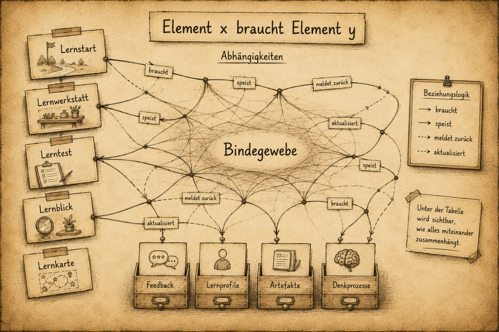
E3 How Many Levels to the Top?
How far can automation in schools realistically go? And how far will it actually go? I build a level architecture from Level 0 (analog baseline, 2024) to Level 4 (fully adaptive, 2040): five levels, four developmental jumps. Each level has a different kind of database connection. It's not a staircase you climb — I see it more as a toolbox. Depending on what I'm teaching, I reach for Level 0 or Level 4. I think I need to find better words than "level."
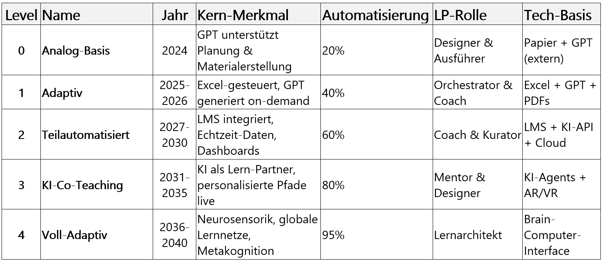
I also notice that I've produced — or had produced — yet another table with ascending numbering. Which is exactly what I didn't want. Right now I'm working at the analog-baseline level, using my "task formats" table to create worksheets.
But especially when it comes to learning pathways, I don't want to keep relying on Excel/GPT recommendations. I want to move toward fully personalized pathways that are also transparent and explainable. And because they're personalized, I'll need to deliberately overweight social and cooperative elements in the algorithms — a kind of counter-cyclical pedagogy, you might say. Does that exist as a concept? Doesn't matter. Either way, in a world where everything is oriented toward personal advantage, it doesn't seem wrong to keep the human dimension in view.
By counter-cyclical pedagogy I don't mean a new theoretical term — I mean a deliberate contrast: precisely when everything is moving toward personalization, individualization, and optimization, I don't want to lose cooperative and social forms of learning.
I suddenly picture a competitive, performance-driven person who's obsessed with appearances, looking at my table and saying: "Level 2 is better than Level 1." And I think to myself: "No. Every level has its value.
Level 0 taught with heart beats Level 4 without soul."
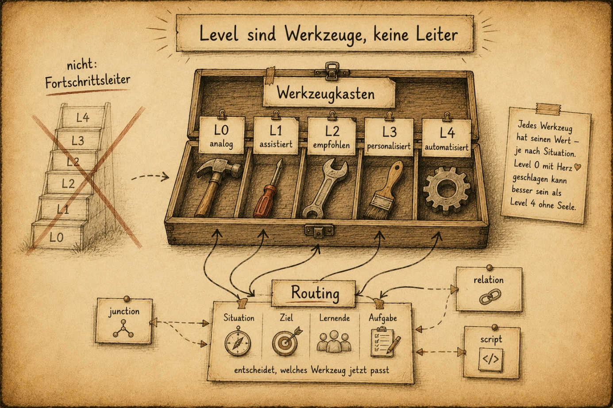
E5 A Side Path to the Mini-Test
It's early November now, and I'm back at work on the databases and their routing. Connections like: "worksheet — a worksheet needs tasks — tasks consist of task formats" are feeding into the concepts. And Excel tables with task formats can be used for worksheets, project work, workshop sessions, and learning assessments. Somehow this brings me back to an old idea:
You: Is it possible to create a master prompt that you hand directly to the students? It would contain all the information about the unit — content, objectives, all of that. The student uploads it, then adds their results from the diagnostic test, and the system tells them: "Go to Learning Space 2, Task 3" — or "Explain to me how you solved Task 4 in the diagnostic test" — or "Go to Learning Space 2, Task 1, but I'll adapt Task 1 for you and create another 4–5 tasks on this topic. Then you do a mini-check with me."
It's a technical-pedagogical development conversation between GPT and me. And I have to keep reminding it of the realities in the classroom. Because as attractive as ideas about web-based tasks, automated evaluations, and personalized feedforwards may sound: I don't have that infrastructure.
I only have Excel and GPT or Claude.
In December I'll be starting a new math unit on percentages, and one thing that might actually work would be web-based short quizzes with prompts in GPT. Is it possible to develop a code that students can upload into GPT to take an AI-generated test? There are still five weeks to go.
E6 Databases in Excel
A week later I'm sitting in front of Excel in the evening. The math chapter is still on the horizon, but I'm building the tables for a planning unit. This isn't pedagogical work — it's technical. I need column headers like, for example:
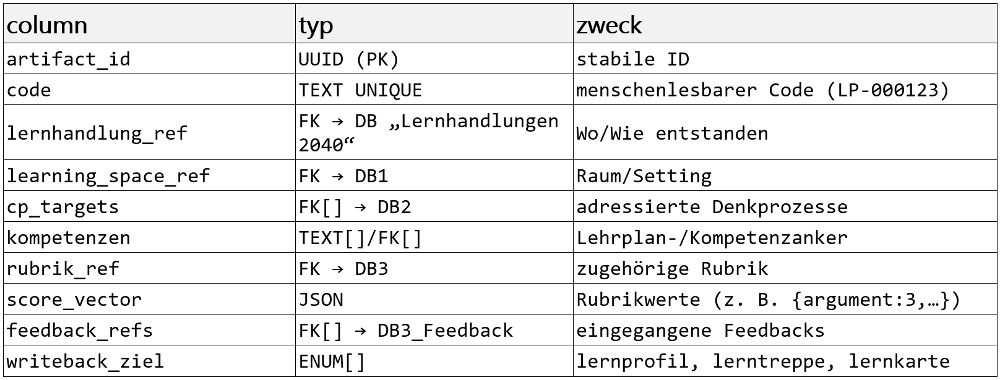
When I look at a table like this, I'm reminded of how I wrote everything in German at the start. That's not a problem. It's more of a retrospective observation — how two months ago German, my native language, and English, the language of GPT, coexisted side by side. But with each suggestion from GPT or Claude, an English term displaced a German one. It's a gradual, barely noticeable process, and it ends with English taking over all the technical database terminology completely.
So now, for example, «evidence_event» stands for logging learning evidence, «learner_id» for anonymizing students, or «artifact_ref» as a reference to the concrete learning product — and dozens more.
And I notice something else in myself: I'm starting to think in English when I prompt.
Another example shows where this process hasn't gone as far yet. In Database 5 «Learning Products & Artifacts», AI generates rows for a project in media and computer science — for instance, the entry about building a CO2 sensor with Arduino. And some of those are still in German. You could deliberately keep everything in German, and maybe I should.
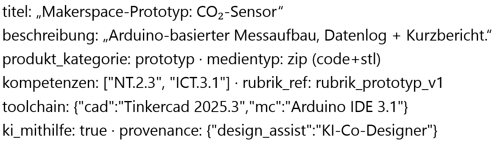
E7 The Connection Layer of the Databases
When I get bored, I work on the routing rules. That is: which element should activate which alternative learning path in response to which event — for example, to give a student a more demanding task. What interests me isn't the databases themselves. It's the branches and connections. That's where the linking logic lives.
I have GPT build a simple example around the learning workshop and the topic of «Feedback & Assessment». It shows me the logic once in SQL — a language used to query and describe databases.
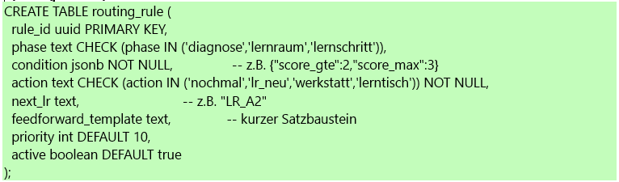
And once as YAML. That one I can open in Visual Studio Code, read in a structured way, and keep thinking from there.
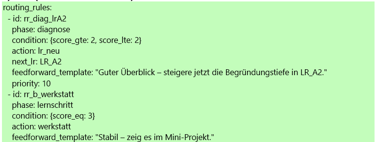
SQL I can't read yet. YAML I can construct well enough to understand what GPT or Claude is building. I design the architecture, AI writes the lines, and I check them again. At the same time, I always picture a specific student from my class — a different one each time. While I'm developing, I keep switching between two worlds: The plan says this. The student does that. I don't know if that already counts as empirical work or if there's a science for it. I just know it's fun. One more round. Then I really have to stop.
A Glimpse into Pedagogical Hell
F1 What Does a Frustrated Learner Need?
It's Monday and it's gotten late. I want to see one last database connection — but I don't want to build it myself anymore. I'm too tired for that. I ask GPT to find more connections between the elements «Feedback», «Assessment», and the database «MOTIVATION & EMOTION» and document them as a proposal. I write that I don't care how it connects what; I give GPT a free hand.
The first output seems harmless enough: «Query 1: What feedback does a frustrated learner need in the LEARNING TEST?»
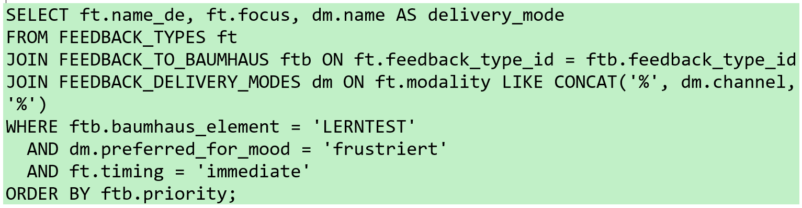
Up to this point it's familiar pedagogical work. I see a learner who is frustrated and a system looking for an appropriate response. I see a query. But these are no longer just suggestions — they're tables with terms like «learner_id», «heart_rate», «galvanic_skin_response (GSR)», «eye_tracking», «attention_event», «off_task», «emotional_label», «flow_state_estimate», «adaptation_action», «alert_log», simulated states, measurement values, and decision logic. Something slowly starts to tip.
F2 A Chill Runs Through Me
Not because of the lines of code, but because I suddenly understand where this logic is heading. The clock on the screen reads 02:34. Outside it's dead quiet. I'm sitting frozen in front of the screen while GPT keeps writing, line by line. I'm reading along — not out of curiosity, but because I can't stop.
At some point I pull myself together and click, for the first time, on the STOP icon.
In that same moment I glance at my sports watch on my left wrist. It tracks my heart rate, my sleep, my movement. And suddenly the question of data logic isn't abstract anymore. I'm already wearing it on my wrist.
It's a surreal situation. And even though I know the terms — Learning Analytics, Transhumanist Learning, Brain-Computer Interface — knowing them is not the same as watching code like this being generated live on a screen in front of you.
F3 A Moment of Dystopia
For a moment I fall. Not into analysis, but into an inner film:
Monitoring software on school tablets logs every click, every app. Family tracker apps show where the child is right now. Smartwatches record sleep, heart rate, and activity. AI tutors never get tired and never give up. Software for support programs that build profiles of children starting in kindergarten. Everything measured, evaluated, and predicted. Each piece looks harmless on its own. Together it's an architecture of control. The child not as a person, but as a data record.
What effect does a permanently overstimulating, tightly measured learning environment have on attention, resilience, and the ability to form attachments? Is there a real risk that the psychological pressure of constant optimization grows — and that children become systemically overwhelmed? That a generation of children gets sacrificed on the altar of progress as «bugs in the program»?
What will we adults say? Living in a world of competition, part of a performance-driven society, in constant fear of missing out, of getting something wrong — surrounded by a time of uncertainty, war, and disaster. «We only want what's best for our children»? We parents will love it. We'll pay voluntarily, and the industry will deliver: «Your child sleeps 7.2 hours, is 92 percent focused today, the language center is 14 weeks ahead.» These industries probably already exist — I just don't know them yet. Specialized in learning processes where 100 percent isn't the goal, but only the starting point for the next optimization. And that thought is exactly what frightens me: a technology doesn't have to be evil to create a pedagogical hell.
It just has to work well — and nobody says STOP in time.
F4 I'm Back
The next morning the code is gone from the screen, but the shock is still with me. I was looking for better teaching and stumbled accidentally onto the dark side of the same idea. When learning becomes networked, adaptive, and data-driven, so does control — more networked, more adaptive, more data-driven. I didn't discover this world. But I felt it for the first time, right in my gut.
I'm not going to stop my work. But I'll keep the ethical limits in view more carefully. Maybe that's exactly the point: I need to understand the technical side of a pedagogical operating system — not to automate everything, but to see more clearly what must never be automated.
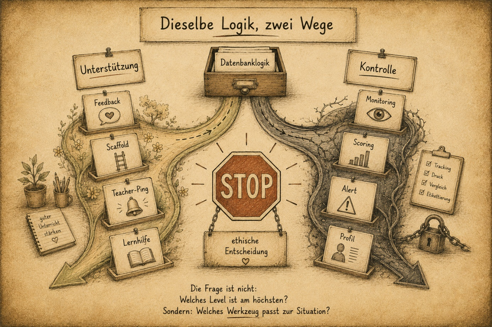
STOP
And the abandoned chat? Will I keep the code?
No.
Delete.